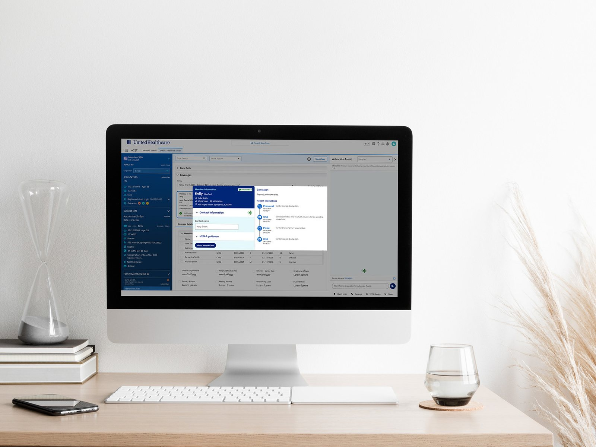
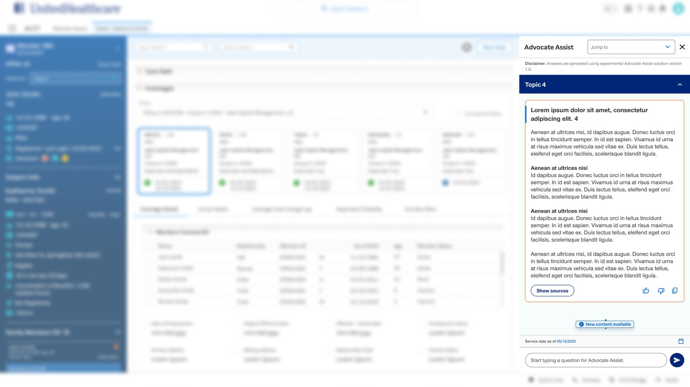
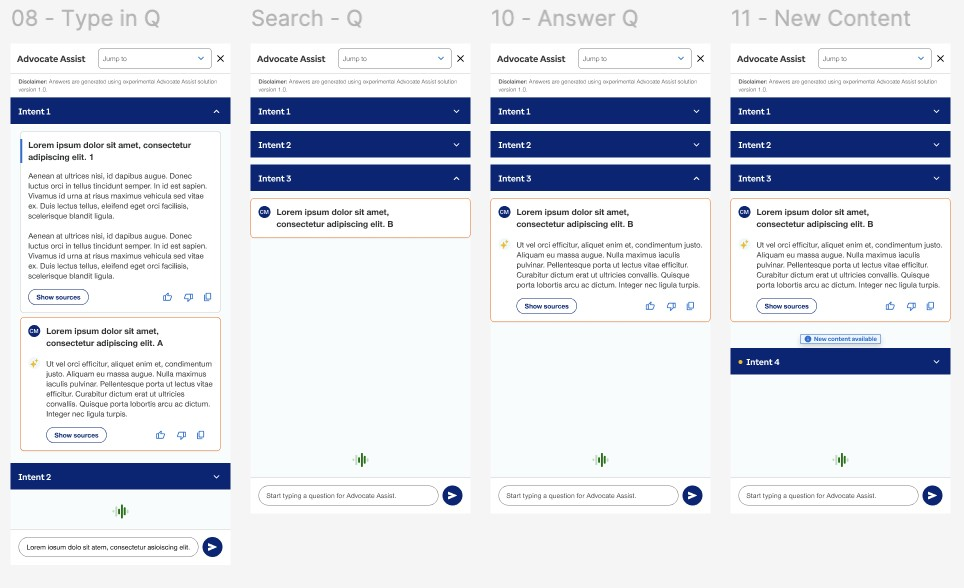

Work / Case study
UnitedHealthcare · AI / LLM · Enterprise CRMArchitecting Generative Intelligence
Integrating large language models to automate contact center CRMs — so advocates could stop diagnosing the software and start listening to the member.



Attention spent in the wrong place
UnitedHealthcare's customer service advocates navigate highly complex, task-heavy interactions during live calls and chats. Because legacy environments require high click volumes and access to disparate enterprise systems, advocates spend valuable time diagnosing how to solve an issue rather than focusing on the member's immediate need and the conversation itself.
The constraint that shaped everything
This solution had to apply to both the Commercial and Government CRMs, which run on entirely different systems — Salesforce and Pega — with different contractual plan needs. Anything hard-coded to one platform would have died in the first integration review, so the interaction model had to be platform-agnostic from day one.
The three-part paradigm shift
01 · Welcome & intent — pre-call engagement
Transforming the initial touchpoint streamlines routing and primes the advocate for success before the interaction even begins.
- Proactive advocate preparedness — immediate context and historical touchpoints before greeting the member
- Reduction in member repetition — no restating identities, issues or medical histories
- Seamless, warm hand-offs — if a transfer is required, all gathered context travels with the member, maintaining a continuous chain of care
02 · Live interactive assistance — in-call support
This phase alleviates the cognitive burden of search and retrieval, letting the advocate prioritize human connection over software navigation.
- Fluid interface navigation — one consolidated, intuitive workspace instead of fragmented, click-heavy systems
- Just-in-time knowledge delivery — accurate answers surfaced dynamically from the live conversation, no manual searching
- Conversational focus — advocate energy shifts from troubleshooting software to empathetic listening and rapid resolution
03 · Post-call summary — wrap-up optimization
Automating administrative closure raises data integrity and gives advocates operational breathing room between inquiries.
- Elimination of manual after-call work — call metrics and resolutions captured automatically
- Cognitive decompression space — a deliberate mental buffer between interactions, reducing burnout and improving readiness
- Standardized documentation — accurate, consistent notes logged across all enterprise ledgers simultaneously, removing human error
The outcome that mattered most
Beyond the interface: we successfully established a robust governance model for the ethical deployment of Generative AI across the enterprise. Design, Data Science and Product operating on one review path, with contract-aware variants and a human accountable at every consequential step.
How the work got made
Discovery through delivery in one Figma workspace — user research and role mapping, explicit problem statements around cognitive overload and system fragmentation, brainstorming sketches, then high-fidelity prototyping and hand-off. The visual trail from early discovery to the final implemented interface was itself a stakeholder communication tool: leaders could see why the screen looked the way it did.
What I'd carry forward
Designing for a model means designing the moments where a human checks it. The most durable decisions on this project were about when the AI speaks — not what it says.